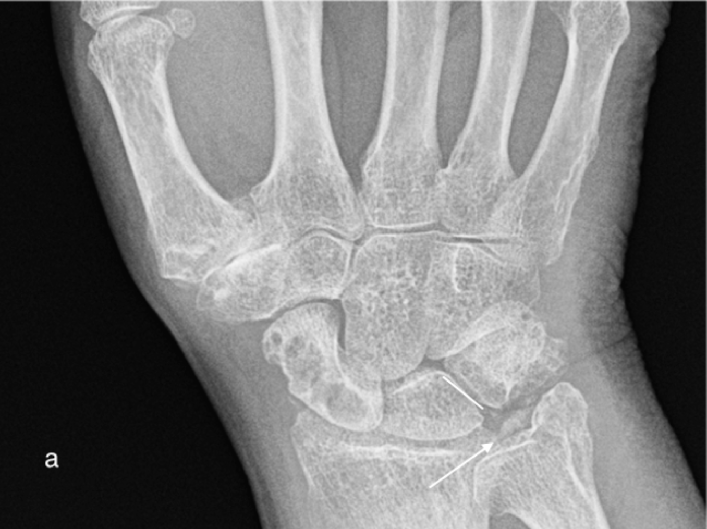

Chondrocalcinosis
- Chondrocalcinosis refers to calcification of cartilage, hyaline or fibrocartilage
- Involvement of hyaline cartilage causes increased density of the cartilage which then become visible on radiographs. Not commonly seen on hand radiographs but can be seen in larger joints such as the knee.
- Calcification of fibrocartilage, triangular fibrocartilage at the wrist, appears as linear increased attenuation of the TFC, separating the distal radioulnar and radiocarpal joints.
- Ligamentous calcification, commonly the scapholunate and lunotriquetral, is often present.
- It is usually, but not always, due to calcium pyrophosphate deposition.
Example Radiograph

a) Chondrocalcinosis of the triangular fibrocartilage (arrow) and lunotriquetral ligament (line) in a patient with CPPD arthropathy

b) Normal radiograph for comparison